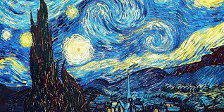

Using simplified colours and difinitive forms, post impressionism aimed to express emotions and themes instead of the optical impression that was the focus in the previous impressionism movement.
1853-1890 Born in the Netherlands Van Gogh was one of the most iconcic artists of the post impressionism movement having made over 2000 pieces of art in his lifetime. Despite this he was not financially successful during his lifetime relying on his brother for finnancial aid, partly because many regarded him as a mardman due to his severe depression, pyscotic episodes and delusions whick eventually led to his suicide by shotgun.
